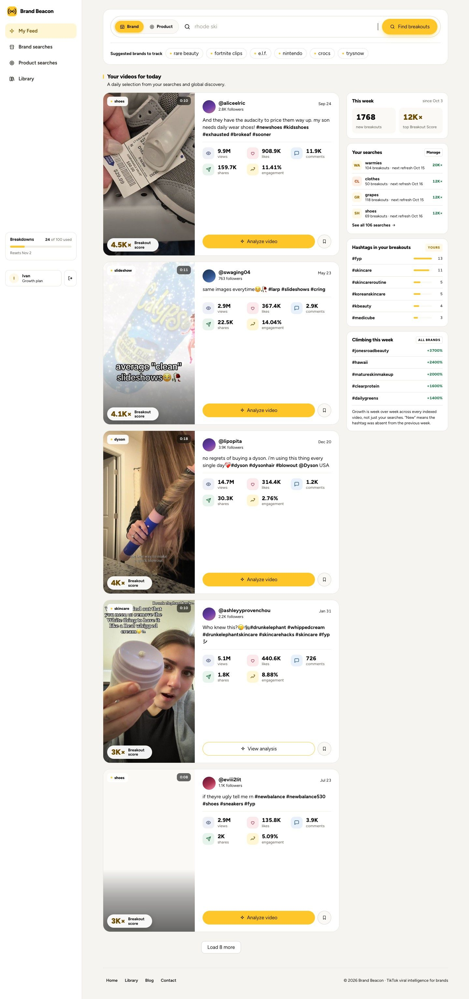
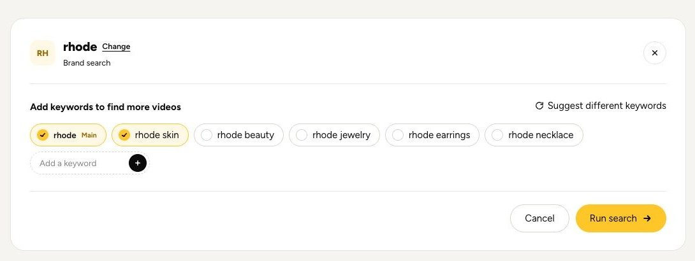
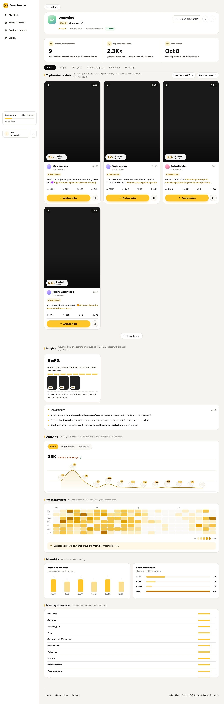
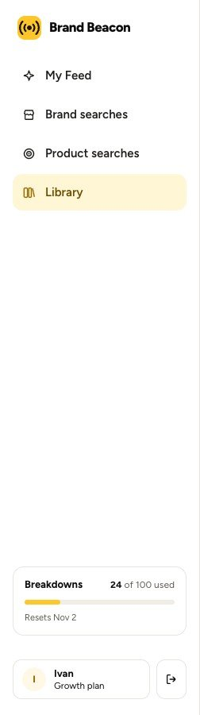
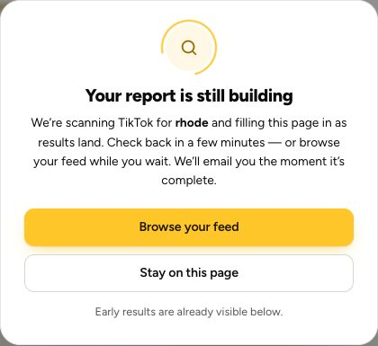
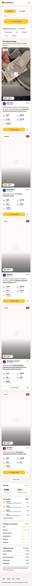

BrandBeacon 3.0 mockups
Left: the live app on 11 Oct. Right: the 3.0 design. Everything matches live except what Ivan asked for on the 6 Oct call, the 8 Oct call and in his 10 Oct Slack notes. Each note quotes him where he set the direction; where he left it open, the row ends with our pick.
The designs are clickable. Press Scroll inside on any screen to scroll it like the real app, or open it full size. Numbers come from the real rhode skin run (18 Sep) unless marked SAMPLE.
1One search for brands and products
Brand / Product toggle, then Find breakouts

- 1No Brand / Product toggle. One box: Search a brand, product or keyword. Ivan, 6 Oct: "having one search. No picking, you just put the keyword."
- 2If the term matches a TikTok account, it shows first in the dropdown.
- 3Find breakouts still opens the keyword step, as on live today (row 2).
- 4Brands, Products and Hashtags rows under the search, before typing. Ivan: "suggest brands, suggest products, suggest hashtags, maybe." A hashtag runs as its keyword (#glazedskin searches glazed skin), since search is keywords only (Ivan, 30 Sep).
Our pick: a matching account opens as its brand card (as on live), with the keyword breakouts underneath. One search credit.
2Smarter keyword suggestions
rhode still suggests rhode jewelry, earrings and necklace

- 1Same panel as live, in place of the search box: Add keywords, Suggest different keywords, Add a keyword, Cancel, Run search.
- 2Keywords read the term, so rhode gets lip tint, peptide lip treatment and glazing milk, not jewelry. Ivan: "takes the current keyword and it reads it and then suggests keywords based on it."
- 3Similar brands row. Ivan: "here's a hot sauce keyword, give me all the hot sauce brands."
Our pick: hashtags are suggested on Home before typing, as you said (row 1). This step adds keywords and brands, since the search itself runs on keywords.
3Results page data
Breakouts this refresh, Top Breakout Score, Last refresh

- 1Header, Export creator list, save, WEEKLY, last run and next refresh, Ready: all as live.
- 2Alert me on each search: an email when it gets a new breakout. Ivan, 6 Oct: "having notifications on each other keyword." Marked Scale, since live pricing lists Virality alerts on Scale; other plans get an upgrade prompt.
- 3Average Breakout Score replaces the Last refresh box (last and next run are already in the header). Ivan: "number of breakouts in this run. Average breakout score." The value is a sample.
- 4Top Breakout Score reads against the creator's usual views, not followers. Ivan, 9 Oct: "A Breakout outperforms the creator's average video... Breakout Score measures that gap."
- 5Quiet second line: videos this run, new this run, top views, average views, first run. Ivan: "top views, average views, and then top score, average score."
- 6Insights moved up, under the header, as counted stats with a Do next. Ivan: "this should be about the content, this should be moved up here."
- 7Tabs, filters and cards with all four stats as live, plus Share next to Analyze and save. Ivan, 30 Sep: "add Share next to Analyze/Save."
- 8AI summary, Analytics, When they post, More data and Hashtags: unchanged from live.
- 1PRODUCT tag with the keywords this search ran, where a brand page shows the handle. Ivan, 6 Oct: "when you do a product search ... how can we present this better?"
- 2Brands in these breakouts: which brands the winning videos feature, each linking to its brand page. Counts are samples.
- 3Same numbers, Insights, filters and cards as a brand search.
Our pick: Average Breakout Score up top, as you asked, with Insights moved up, alerts on Scale and Share on every card. Product searches lead with the brands in their breakouts.
4Left sidebar: saved searches, video analyses, search history
My Feed, Brand searches, Product searches, Library, Breakdowns

- 1Saved searches, Saved videos, Video analyses, Search history up front: the four Library tabs. Ivan, 6 Oct: "why hide them behind the library if we can just put them up front?"
- 2Brand searches and Product searches become one Saved searches list, since search is now one box.
- 3A search that is still running shows here with a progress bar, then a toast when it is ready.
- 4Searches added next to Breakdowns (live shows searches only on Library and mobile). Ivan: "searches, breakdowns, etc. in this little bar."
Our pick: no separate Library page. Each sidebar item opens its own list, with the same filters Library has today.
5My Feed: keep, or replace with search terms
One column feed with This week, Your searches, Hashtags and Climbing
- 1My Feed is removed. Home is the search and the suggestions.
- 2Your searches: each search term with its breakouts, top score, new count and next refresh. Ivan, 6 Oct: "I don't even know if we should have one. I think we should just have search terms."
Our pick: remove My Feed and show your search terms on Home, as you said.
6Onboarding checklist
- 1A 1 of 4 done card above the usage meters; click to see the steps. Ivan, 6 Oct: "do your first brand search, do your first analysis, do your first whatever."
- 2Steps: run a search, analyze a video, save a search, save a video. All four exist on live today.
- 3It goes away once all four are done.
Our pick: Free gets one video analysis (today it gets 0), so every new account can finish the checklist.
7First search journey: where BB drops people after Run search
A loading page with nothing to do while the report builds

- 1Three steps that say what is happening, like UGC Breakouts processing.
- 2Email me when it is ready is on by default and says they can leave.
- 3A How to read your results video, so the Breakout Score makes sense when results land.
- 4Then breakouts other searches found this week.
- 1Run search lands on Home. A slim bar says it is running, with See progress.
- 2Pick for every search, the first one too. Ivan, 8 Oct: "let's put them somewhere else so that they know that it's coming." 10 Oct: "something on screen to keep them engaged ... see other breakouts."
- 12 breakouts so far. Still checking 140 of 200 videos.
- 2No empty wait. Depends on scoring videos one at a time (Lester).
- 1All three keep the search in the sidebar, email when it is ready, and end here.
- 2Thumbnails reuse the rhode skin run; "usually 1 to 2 minutes" is from the 22 Sep test.
Our pick: B for every search, as you said: Run search drops people on Home with the search running in a bar, and the email brings back anyone who leaves. C replaces it once the speed work lands.
8Mobile
Toggle, search, then a long feed; Your searches sits at the very bottom

- 1Same Home: one box, then Brands, Products and Hashtags.
- 2Your searches right under it, one tap each. The sidebar moves to the menu, with searches left shown up top.
- 1Header, alert and export stack; the three numbers stack.
- 2Insights, then the videos one per row. Open full size for the rest.
Our pick: every 3.0 screen also works at phone width. Ivan, 6 Oct, on mobile: "it takes a long time to go to that." Load time itself is Lester's speed work.
9First search complete email

- 1Trigger: the first search completes. Once per account. Skipped if they already opened the results.
- 2Subject: "Your {{search_term}} breakouts are ready". Preview: "{{breakout_count}} TikTok videos beat their creator's usual views."
- 3One picture (the top video's still), one button, signed by Ivan.
- 4Replaces B1 Results ready, written for someone who left. Searches-left line dropped.
- 5For Lester: search_completed (first one); merge tags first_name, search_term, breakout_count, top_score, top_video_thumb, results_url. 14 and 8.6K× are samples.
Our pick: send it once, after the first search only. For Lester: if B1 is already live, this is a copy change only.